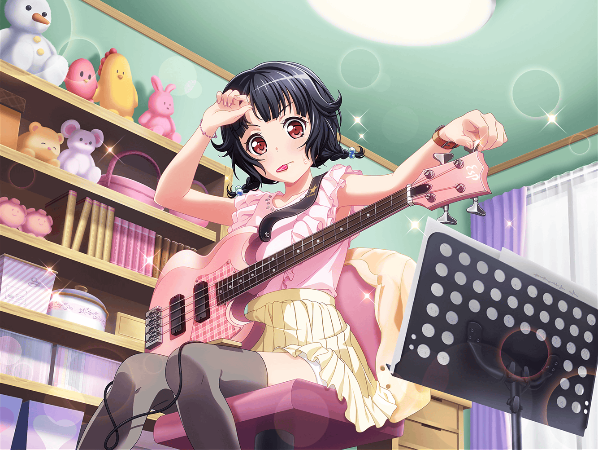

牛込家 りみの部屋
りみ
〜♪ 〜〜♪
りみ
……っ！
はあ……なんでだろう。
さっきから毎回、同じところで間違っちゃう
りみ
こんな調子じゃ……

たえ
せっかく、この間のライブは成功したのに……
香澄
みんな、バラバラだよ〜！
りみ
……！ そ、そんなのダメ……！
りみ
もっと練習しなくちゃ。
もう１回、最初から通して弾いてみよう
りみ
……っ！
また同じところで……なんで……？
ゆり
りみ、いる？
りみ
お姉ちゃん。ごめんね、うるさかった？
ゆり
ううん、そうじゃなくて。
りみのベース、さっきから同じところで止まってる気がして
ゆり
もしかしたら悩んじゃってるんじゃないかなーって
様子見に来ちゃった
りみ
……うん。なんだか、少し調子が悪いみたい
りみ
何度弾いても、同じところで指が動かなくなっちゃって、
全然うまくいかないんだ。
自分では、ちゃんと集中してるつもりなんだけど……
ゆり
そっか……少し休憩したら？
お茶でも淹れてこようか
りみ
ありがとう。でも今は大丈夫
りみ
今度の演奏でちゃんと弾けないと、他のバンドさんが
ライブに出てくれないかもしれないんだ。
それまで時間がないし、もっと練習しないと
りみ
他にもたくさんやらなきゃいけないこともあるし、
少しでも長く練習しなくちゃ。休んでるヒマなんてないよ
りみ
もっと、もっと頑張らないと……！
ゆり
あー……なるほど。そういうことね。
まありみらしいっちゃ、りみらしいんだけどねー
りみ
え？ えっと……お姉ちゃん？
ゆり
いい？ りみ。
このまま続けても、きっといい結果は出ないよ。
むしろただ疲れるだけで、りみにとってはマイナスだと思う
ゆり
りみが今すべきことは気分転換。
そうね……とりあえず公園にでも行ってきたら？
こういう時だからこそ、肩の力抜くのも大事だよ
りみ
で、でも……
ゆり
でももだってもないの。
時間ないんでしょ？ ほら立って！ 行った行った！
りみ
ええっ……は、はいっ……！

住宅地
りみ
――お姉ちゃんに言われて飛び出してきちゃったけど、
どうしよう……
りみ
ただでさえ時間がないのに、公園に行ってこいだなんて……
お姉ちゃん、いったい何を考えてるんだろう？
りみ
はあ……１回公園に行って、着いたらすぐにおうちに戻ろう。
もっと練習しなくちゃ……
？？？
きゃっ！
りみ
ひゃあっ！？
りみ
いたた……ご、ごめんなさい！
私、考えごとをしてて……
花音
こ、こっちこそごめんなさい。
ちょっとよそ見をしてて……あれ？ りみちゃん？
りみ
花音先輩？ どうしたんですか？ こんなところで
花音
え、えーっと……えへへ……
りみちゃんこそどうしたの？ なんか急いでたみたいだけど
りみ
え？ あ、いえ。
急いではないんですけど……ちょっと公園に行こうと思って
花音
公園？ この近くにあるの？
りみ
はい。
この道の先をちょっと奥に入ると、細い道があって
その先にあるんです
りみ
結構広くて、日なたぼっこにピッタリなんですよ。
私、前はよくお姉ちゃんと、一緒に遊びにいってて……
りみ
（でも今は、そんなことしてる場合じゃ……）
花音
りみちゃん……？ も、もしかして
さっきぶつかった時に、ケガしちゃったとか……？
りみ
あっ……そ、そんなことないです！
すみません！
りみ
ただ、その……ちょっと考えごとを……
花音
そうなんだ。
……えーっと……わ、私もいこうかな？ 公園
りみ
え？ 花音先輩もですか？
花音
うん。考えごとのジャマはしないようにするから。
その……だ、ダメかな？
りみ
い、いえ！ そんなことないです！
それじゃ、私案内しますね
花音
うん。ありがとう、りみちゃん